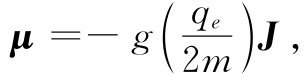
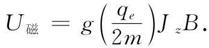
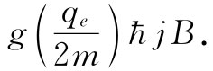
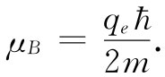
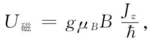

现在，我们又要再来谈论磁矩。上面曾经说过，在量子力学中一个特定原子系统的磁矩可通过式（34.6）用角动量写出：
 （34.27）
其中-qe 和m分别表示电子的电荷和质量。
一个置于外加磁场中的原子磁体将具有额外能量，这取决于它的磁矩沿场向的分量。我们知道，
U磁 =-μ·B. （34.28）
选择z轴使其沿B方向，则
U磁 =-μz B. （34.29）
利用式（34.27），我们得

量子力学表明，Jz 只能有某些值：jћ，（j-1）ћ，…，-jћ。因此，原子系统的磁能并不是任意的，它只能有某些值。例如，它的极大值为

qe ћ/（2me）这个量通常被赋予“玻尔磁子”的名称而被写成μB ：

磁能的可能值为

其中Jz/ћ取可能值：j，（j-1），（j-2），…，（-j+1），-j。
换句话说，一个原子系统当被置于磁场中时，其能量改变的值正比于场，同时也正比于Jz 。我们讲，一个原子系统的能量被磁场“分裂成2j+1个能级”。例如，在磁场外时能量为U0 而j值为3/2的一个原子，当被置于磁场中时，就会有四个可能的能量。我们可以通过像图34-5中所画的能级简图来表明这些能量。任何特定原子在任何给定的磁场中只能有这四个可能能量中的一个。这就是量子力学所说的关于一个原子系统在磁场中的行为。
图34-5 自旋为3/2的原子系统在磁场B中可能具有的磁能
最简单的“原子”系统乃是单个电子。电子的自旋为1/2，因而就有两个可能的状态：Jz =ћ/2和Jz =-ћ/2。对于一个静止（没有轨道运动）的电子来说，自旋磁矩具有等于2的g值，因而磁能可以是±μB B中的一个，在磁场中的可能能量如图34-6所示。大概而言，我们就说电子或者具有“向上”（沿场方向）的自旋，或者具有“向下”（逆场方向）的自旋。
图34-6 电子在磁场B中两个可能的能量状态
对具有较高自旋的系统，就会存在更多的态。我们可以设想其自旋是“向上”或是“向下”，还是在这两者之间翘起某个“角度”，这都要取决于Jz 值。
在下一章我们将用这些量子力学结果来讨论材料的磁性。